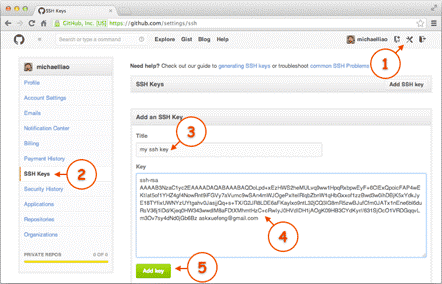

Git 简明教程¶
安装¶
- Windows 系统：从 https://git-scm.com/downloads 或本站的下载页面获取 Git for Windows，按默认选项安装即可
- macOS 系统：从 Homebrew 安装
- Linux：从默认软件源安装即可（CentOS 7 建议从 EPEL 安装）
- Debian / Ubuntu:
sudo apt-get install git - CentOS 7:
sudo yum install epel-repo; sudo yum install git - CentOS 8 / Fedora:
sudo dnf install git
- Debian / Ubuntu:
Git 初步使用¶
注：命令前面的 $ 表示提示符，实际操作时不需要输入。
初步配置¶
Windows 从开始菜单找到 Git Bash 打开，可以进入 Git 命令行，其他系统直接打开终端。首先配置 Git 的名称和邮箱（必须）：
$ git config --global user.name "Jon Doe"
$ git config --global user.email "email@example.com"
其他操作系统类似。
创建项目仓库¶
$ mkdir learngit
$ cd learngit
$ pwd
/Users/tao/learngit
$ git init
这样你的 Git 版本库就创建好了，接下来就是使用 Git 工作了。
提交文件¶
在 learngit 目录中放入一个文件（可以自己新建然后写一些内容，也可以是复制粘贴过来），例如 readme.txt
文件的提交：
- 第一步：
git add readme.txt - 第二步：
git commit -m "wrote a readme file"
（引号里的内容是本次提交的说明，以便下次你就可以看说明就知道你这次提交做了什么）
然后你可以继续修改你的文件，如增删单词等。
输入以下命令查看仓库状态（任何时候都可以查看，要经常使用）
$ git status
输入以下命令查看即将提交的修改内容
$ git diff readme.txt
修改完后就可以提交了，同样是两步 git add 和 git commit
版本回退¶
可以返回到任意一个你所提交过的版本
$ git log # 查看提交日志
$ git reset --hard HEAD~ # 一个 ~ 表示退回一次提交，也可以用 HEAD~n 直接退回 n 次提交
也可以直接退回到指定的版本：git reset --hard 1094a，后面为版本号（至少）前四位，版本号可以在 git log 中查看
查看文件内容¶
$ cat readme.txt
或者更友好的查看方式：
$ less readme.txt
按 Q 可以退出 less 查看器。
撤销修改¶
git checkout -- readme.txt 可以让文件回到上一次提交时状态
git reset readme.txt 撤销暂存区的修改，即撤销 git add 的作用（具体用法与暂存区深度理解查看文末链接）
删除文件¶
$ git rm test.txt
$ git commit -m "remove test.txt"
远程仓库¶
首先你要有个远程仓库，如果你还没有，可以选择在 GitHub 或者科大超算中心 GitLab 上注册账号。
关联到本地¶
- 第一步：生成一对 SSH 密钥。在 Git 命令行中输入以下内容（邮箱替换成你自己的）
$ ssh-keygen -C email@example.com
一路回车，一般不需要设置密码
- 第二步：在用户主目录下找到
.ssh文件夹，打开里面的id_rsa.pub文件（可以用记事本打开），复制里面内容，以ssh-rsa开头的一行字
登陆 GitHub 或 GitLab，点击右上角头像，选择 Settings → SSH Keys 页面
点 Add SSH Key，填上任意 Title（方便自己辨认），在 Key 文本框里粘贴 id_rsa.pub 文件的内容即可

确认 SSH 密钥添加成功：ssh -T git@github.com，如果看到你的用户名提示认证成功，那么这一步就配置完成了。
添加远程库¶
登陆 GitHub，左上角 Repositories 处点击绿色的 New 按钮，仓库名填 learngit（也可以自己重新起，后面保持同步），其他默认，点击创建完成。
输入以下命令（username 换成你自己的用户名）：
$ git remote add origin git@github.com:username/learngit.git
删除关联的操作：git remote remove origin
推送本地内容到远程库：
- 初次推送：
git push -u origin master - 后面推送就简单了：
git push
将远程库同步到本地：git pull
至此，Git 基本用法已经简单介绍完了，深入学习请看以下链接